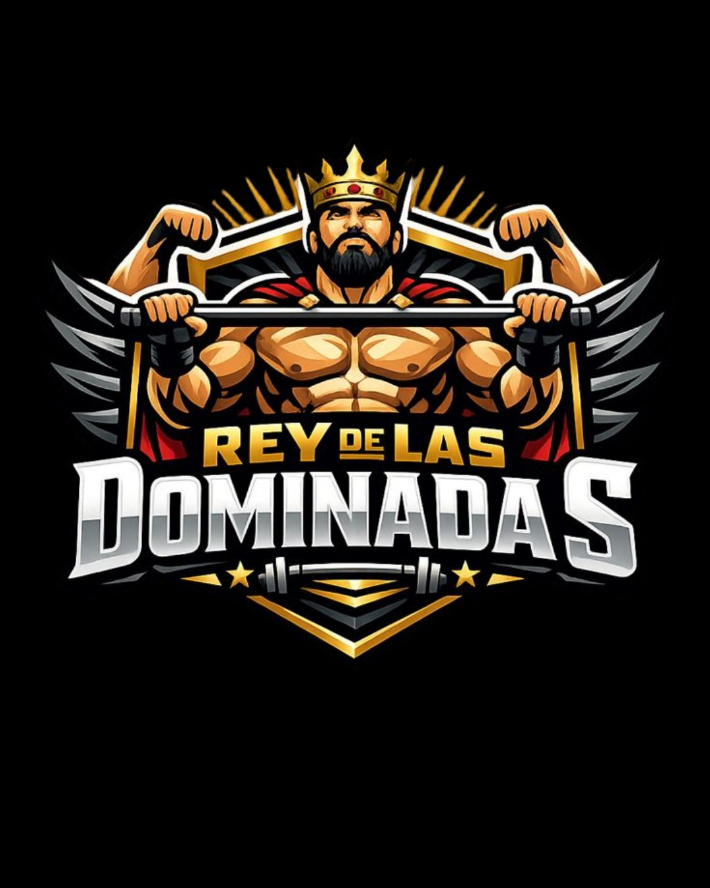

Seis preguntas sobre cómo entrenas y cómo se siente tu dominada. Al final, el eslabón que te está frenando.
Casi nadie está estancado "en general". Se está estancado en un eslabón concreto de la cadena: el control escapular, el agarre, la fuerza de tirón o el cierre de la repetición. Responde con sinceridad: aquí no hay respuestas buenas ni malas, solo información sobre ti.
El patrón de casi todo el que lleva meses clavado es el mismo: ir a la barra, hacer las máximas repeticiones posibles, descansar, repetir. Un día tras otro. El mismo estímulo, la misma fatiga, el mismo número.
Tu cuerpo se adapta a lo que le pides. Si le pides siempre exactamente lo mismo, se queda donde está: ya cumple con lo que le exiges, así que no tiene ningún motivo para construir más fuerza.
Estuve dos años haciendo ocho dominadas. Hoy hago más de veinticinco. No cambió mi esfuerzo: cambió el sistema.
Salir del estancamiento no es entrenar más ni apretar más los dientes. Es atacar tu eslabón débil con la progresión adecuada, en el orden adecuado, dándole a tu cuerpo motivos nuevos para adaptarse. El primer paso es saber cuál es tu eslabón, y acabas de darlo.
El Rey de las Dominadas son 30 días conmigo: plan día a día según tu nivel, corrección de tu técnica en vídeo, y test de entrada y de salida para que el progreso lo midas tú. Empezamos justo por tu punto débil.
Escríbeme REY O entra gratis a mi canal: método y casos reales cada semana